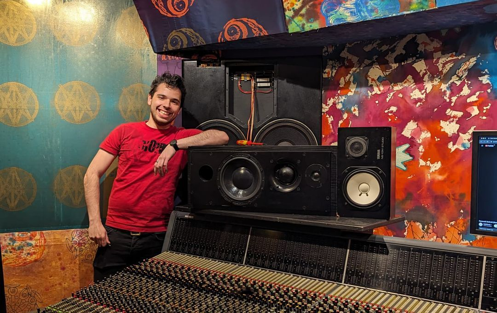
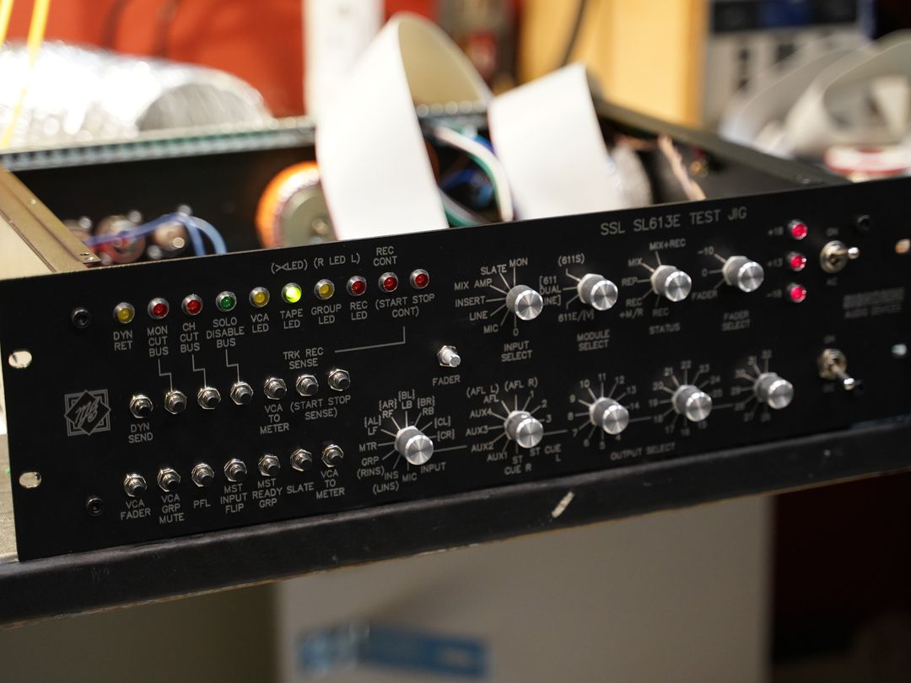
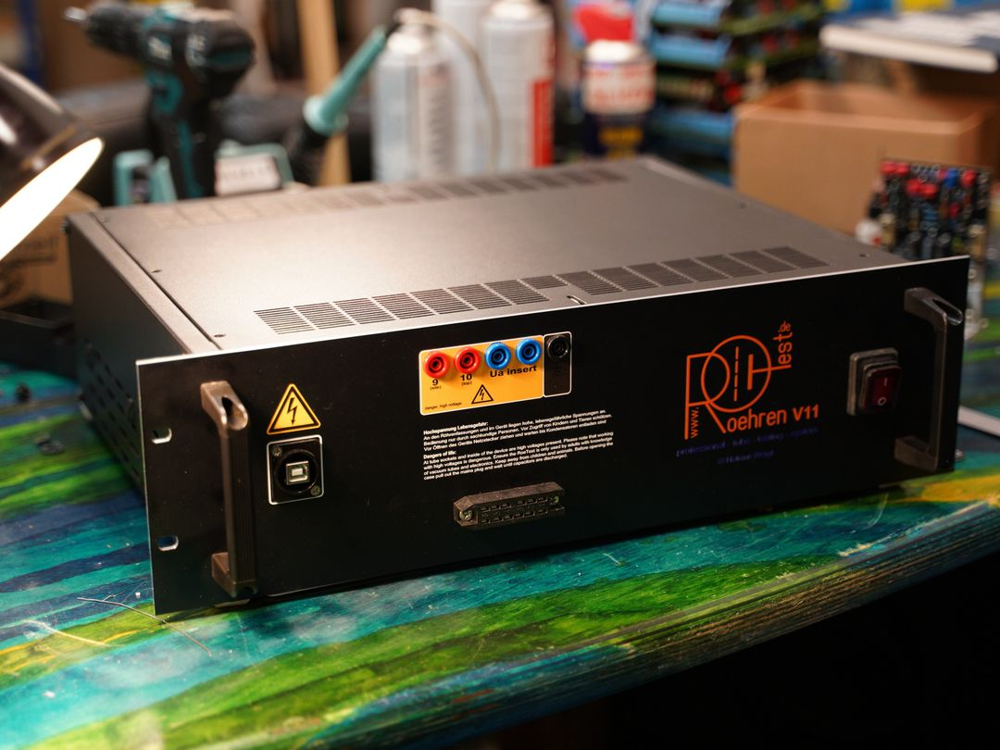

Michele Signorini
Based in London, I repair, maintain and restore recording studio equipment, from 1960s consoles to tape machines, and design my own gear under Signorini Audio Devices. I trained in electronics engineering in Italy, worked as a technical engineer at Metropolis Studios, ran the technical department at Strongroom Studios, and now run my own workshop.
I'm Michele
I'm a London based technical engineer. I've been fascinated by analogue electronics, and by taking things apart and putting them back together, for as long as I can remember.

What I repair
Consoles, outboard, microphones and tape machines, mostly from the 1960s to the 1990s, serviced, restored and improved where needed.
I support recording studios across London and Europe, such as Strongroom, Metropolis, RAK, Church Studios and Studio 13. See clients for a fuller list.
Where the work happens
Most work is done in my workshop at Baltic Studios. Gear that is too big or too delicate to move, consoles and most tape machines, I service on location at your studio with my tool kit.
Rates and how to book are on the Terms page.
Equipment I've worked on
Some of the brands I've worked on.
Mixing desks
Tape machines
Outboard
Microphones
Amps and instruments
Making it better than new
I always aim to think outside the box and improve every piece of equipment I work on. Where I can, I go beyond the repair and improve performance and longevity.
For instance, I modified a Neve console by installing ultra low noise fans and redesigning the channel chassis to improve airflow where it was needed most. It runs virtually silent, even in continuous operation.
On the bench lately
EMT 140 plate reverb amplifier
Powered up on the bench, the uA709 op-amps replaced, and a quicker way of reading the schematics and PCB layouts.
View on Instagram →Oct 2026Studer A80
Making an adapter for the input module and tracking down an intermittent fault on the capstan control card.
View on Instagram →Jul 2022SSL 4000 G series
Replacing the keyboard on the 4000.
View on Instagram →Jun 2025Dalcon console
Maintenance, fader cleaning and setting up the Tangerine automation system.
View on Instagram →Dec 2022Neve 1081
An original module, repaired and serviced.
View on Instagram →Jul 2022AKG C414
A trusty 414 with a faulty pad switch.
View on Instagram →Book, build, explore
Terms →
How to book a repair, rates, and the terms that apply to every job.

Custom products →
Test jigs, replacement cards and custom units, with dedicated PCBs and front panels.

From the workshop →
The tools and personal builds behind the repairs.